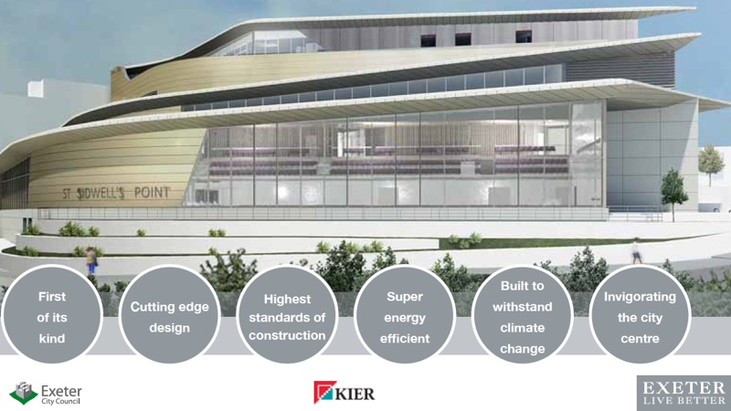

The Committee on Climate Change published its annual report on 25 June, two days before the anniversary of the UK’s carbon reduction pledge being signed into law. The report rebuked the government’s slow progress, urging much more dramatic action to avoid a post-pandemic emissions rebound.
The government nevertheless announced spending plans a few days later that dismayed environmental experts after spending billions of pounds during lockdown bailing out airlines, carmakers and oil companies without attaching emissions reduction conditions.
Other G20 countries have taken similar post-pandemic public investment decisions despite being committed to the Paris Agreement on climate change.
The report followed news that “incredibly alarming” research being compiled for the sixth assessment by the United Nations Intergovernmental Panel on Climate Change, due next year, suggests that previous worse-case global heating scenarios may not go far enough.
At the same time Siberian heatwaves have seen temperatures of 38°C inside the Arctic circle, with some places doubling previous records, and a major study has confirmed that the dramatic drop in emissions caused by coronavirus lockdowns around the world, even if sustained permanently, would be nowhere near enough to limit global heating to 1.5°C by 2050.
Leading climate experts say that policy-makers and their advisers are “running scared” of the fundamental changes that are urgently needed to prevent catastrophic impacts, choosing politically-palatable policies to present as solutions that don’t actually work.
Typology of climate delay discourses. Source: Discourses of climate delay under CC BY 4.0 license.
Despite Exeter City Council’s “mission to be recognised as a leading sustainable city and global leader in addressing the social, economic and environmental challenges of climate change and urbanisation” it is clear that it does not have all the answers to these problems. Neither do Exeter’s youth climate activists: none of us can tackle this crisis alone.
But it is also clear that, despite expressing support for carbon neutrality when first confronted by Exeter’s youth climate strikers in February 2019, and declaring their intent to make the city carbon neutral by 2030 the following month, city councillors had very limited understanding of what reducing Exeter’s carbon footprint to sustainable levels would actually involve.
The Exeter City Futures “Net Zero” Exeter plan subsequently commissioned by the council acknowledges that it also has limitations, and that it is incomplete work in progress that requires further input and development before an update at the end of the year.
However it actually has profound flaws that cannot be addressed by minor changes.
These include ignoring major sources of emissions altogether, an unexamined reliance on unworkable and unjust carbon offsetting, and a mismatch between what is expected of the private sector and what the private sector is capable of delivering.
The consultation on the plan’s content was little more than performative, and it leaves monitoring mechanisms unexplained, relies heavily on voluntary behaviour change and ignores unavoidable systemic transformation in favour of partial, technocratic solutionism.
Since the plan was published, its failure to explore approaches to change that do not rely on massive inward capital investment has become even more acute as financial shortfalls caused by the COVID-19 pandemic have prompted Exeter City Council’s chief executive to describe plan delivery as “problematic”.
The city council’s Executive has nevertheless already accepted it and Exeter’s full council meets today to confirm that decision.
Exeter youth climate strikers. Photo: Anders Eidesvik.
We recognise that the plan contains policies which would not be out of place alongside a Green New Deal for Devon, such as a local retraining scheme for workers in high-carbon sectors. But we remain extremely concerned about how such proposals will be implemented, and by whom.
We offer these criticisms to challenge Exeter to confront the transformation that is necessary for a just transition to a low carbon economy. Analysing and challenging political decisions in the public sphere is necessary for any democracy to function. We should always be open to criticism, and support, from each other.
Exeter youth climate strikers
First, some definitions. Greenhouse gases, including carbon dioxide (CO2) and methane, are emitted through the burning of fossil fuels, the clearance of land and the production and consumption of food, goods, materials, buildings, roads and other products and services.
The carbon footprint of a defined population, system or activity is its total greenhouse gas emissions considering all relevant sources, sinks and storage, expressed in tonnes of carbon dioxide equivalent (tCO2e). When products and services are imported, the emissions from their supply chains are imported with them.
Carbon offsetting involves compensating for emissions in one place by reducing them in another, often where it is cheaper to do so.
The idea is that industries in developed countries which employ the most efficient technologies, but nevertheless still emit greenhouse gases, invest to make projects in developing countries cleaner than they would otherwise be. (In practice this is often not what happens, as we shall explore in the next article in the series.)
Carbon offsetting comes in two main forms: voluntary, where it is often bought by consumers to alleviate guilt or businesses to promote their brands, or via compliance mechanisms imposed on companies or countries by governments or transnational organisations like the European Union.
As even basic human needs such as food, warmth and shelter are difficult to achieve without carbon emissions in industrialised societies in which many people have very high expectations about living standards, cities such as Exeter cannot avoid offsetting if they want to stop contributing to the climate crisis.
A net zero carbon population, system or activity entails that population, system or activity removing greenhouse gases from the atmosphere itself in order to counteract its carbon emissions, which is very difficult to achieve for Exeter because of its limited land supply and the sources of its emissions.
In contrast carbon neutrality typically involves the purchase of offsets to counteract emissions instead of drawing down carbon directly.
Carbon footprint of global food supply chain. Source: Visual Capitalist.
However the Office of National Statistics and Committee on Climate Change both use “net zero” to describe a combination of the two, in a fudge that routinely produces confusion, as it did when Exeter City Council’s Executive committee decided to commission Exeter City Futures to oversee production of what is now called the “Net Zero” Exeter plan in June last year.
The council nevertheless directed Exeter City Futures to adopt more meaningful language by replacing terms such as “net zero” with “carbon neutral” from then on, a decision that was reviewed both in a subsequent scrutiny meeting and another Executive meeting before being ratified by the full council in July.
But six months later “Net Zero” reappeared in an Exeter City Futures progress update as the name of a proposed “mobilisation summit” (which did not take place because of the coronavirus pandemic) and has been in use ever since.
It framed the “blueprint” that was published in February and the political and business consultation workshops and public engagement exercise that took place in February and March. It also defined the resulting “Net Zero” Exeter carbon reduction plan which was delivered to the council in April and is about to become council policy.
The plan isn’t just named this way: “net zero” appears 106 times in the body of the document and a further 65 times in page number subheadings. This is nearly five times as many appearances as “carbon neutral”.
None of the city councillors or officers who attended the scrutiny committee which heard the update had anything to say about the reversal of the council’s earlier policy decision, and the full council members who met in February ratified the scrutiny committee’s minutes without comment.
According to the council, Exeter City Futures made this decision independently.
Exeter City Council Strategic Scrutiny committee in action
The distinction between “net zero” and “carbon neutral” may not seem significant in the scheme of things. But the language we use to describe and think about our world has profound consequences, particularly in the public sphere, while its ambiguities can, and often are, exploited by bad actors.
For example, so called “zero emissions” cars are actually only so at the exhaust pipe (as is acknowledged in their promotional small print), and continue to produce significant levels of particulate pollution when driven, as well as having very high production impacts. Even when charged with renewable electricity such vehicles are neither zero carbon nor carbon neutral.
Exeter’s first development of “zero carbon homes” at Pulling Road in Pinhoe is similarly misnamed. The UK Green Building Council says that the production and construction of residential buildings accounts for more than half their carbon emissions but no offsets are included in the developer’s plans, and the council has approved 96 car parking spaces for just 40 homes, a ratio of 2.4 cars per household.
The council planning officer’s report ignored these issues, despite the council requiring all reports since July 2019 to “include an analysis of the progress and impact in working towards a carbon neutral city goal”. According to the council, this does not extend to quantified carbon impact assessments.
The Passivhaus energy efficiency standard the city council has adopted for its flagship St Sidwell’s Point leisure centre development similarly ignores the carbon footprint of construction and the materials that are used, which is how the building’s design can rely on the enormous concrete pillars now rising above the site.
Concrete is the most destructive material on earth: if the cement industry were a country it would be the world’s third largest carbon dioxide emitter after the US and China.
Concrete foundations at St Sidwell’s Point construction site
The city council last year proudly announced that 150 lorry loads of concrete were to be used in the first phase of building alone and that the site crane needed a concrete base deeper than a three storey building.
The council, acting as planning authority, twice concluded no environmental impact assessment of the development was required, and at no point during the controversial scheme’s history has any form of carbon emissions modelling for the building’s life cycle been performed.
The developers extol the half a million city centre visits the building is expected to drive each year, many of which will presumably be encouraged by the free car parking that is proposed, and promote its resilience in the face of predicted climate change.
But no consideration been given to whether, like HS2, it could actually be a net carbon emitter over its lifespan because of the impact of its construction and use.
Misleading marketing that promotes the consumption of goods and services which are part of the problem as if they are part of the solution is not new. But the terms in which Exeter frames its carbon reduction aspirations and resulting public policy do matter.
The city council specifically instructed Exeter City Futures to use “carbon neutral” instead of “net zero” with this in mind. But a “Net Zero” Exeter plan has nevertheless been delivered and is about to become official council policy.
Unfortunately, however, the council’s failure to follow up its own decisions runs deeper than the presentation of its carbon reduction plan. Its value as a policy on which meaningful decisions can be based is in doubt because, among other failings, it enormously understates the scale of the challenge the city faces.
 St Sidwell’s Point leisure centre promotional graphic
At its meeting in June last year, the city council Executive commissioned Exeter City Futures to conduct a full audit of the city’s current carbon emissions to identify what it called its “baseline state” as well as to “highlight gaps between current plans and what is required to achieve zero carbon”.
This baseline audit was a key component of the city’s response to the climate emergency: the decision to commission it was discussed and approved at no fewer than four city council meetings.
But the audit was never delivered, and there are major discrepancies between the carbon reduction figures that are included in the “Net Zero” Exeter plan and those contained in an Exeter City Futures progress update submitted to the council in December 2019 (and the “key facts” document it published in February 2020) which came from a University of Exeter study of Devon’s 2017 emissions.
While the plan acknowledges that “a more comprehensive assessment of the carbon cost will need to be undertaken”, the total of all projected carbon savings from the actions it proposes (329,000tCO2e) is only 60% of the University of Exeter figure for the city (546,000tCO2e). This leaves more than 217,000tCO2e unaccounted for each year.
Nor does the plan identify the relationship between the savings figures it presents and Exeter’s current carbon emissions. Instead it outlines a series of actions that “Exeter City Futures believe[s] can deliver the city’s carbon ambition” with carbon savings figures attached which it says have been calculated “for the forecast year 2031”.
These savings are presented without reference to the emissions they are supposed to offset. Nearly 90,000tCO2e of energy emissions identified in the University of Exeter study are left out of the plan, and the impact of industrial activity in the city is ignored altogether.
The lack of alignment between the plan’s proposed actions and established emissions monitoring datasets is reflected in the plan’s presentation: almost all its proposed actions are framed in terms of vaguely-defined activities, rather than specific outcomes, and very few include quantifiable measures of success.
Sources: Exeter City Futures & University of Exeter.
It is possible that the plan’s authors have assumed that Exeter’s carbon reduction goals need not match its current emissions levels, and that the city’s emissions will fall in tandem with national projections for the next ten years while wider changes add to those made in Exeter. (Although such assumptions are nowhere mentioned in the plan or its accompanying explanatory spreadsheet.)
Provisional ONS statistics do suggest that the UK’s emissions fell 3.6% in 2019. But the country will nevertheless not meet its fourth carbon budget by 2023 nor its fifth by 2028. And these budgets were set against the previous target of an 80% net reduction in emissions by 2050: the new UK target of 100% net reduction by 2050 means change must accelerate across the country.
Yet most Committee on Climate Change recommendations have not been delivered and the government is ploughing ahead with massive infrastructure spending, including £27 billion to build 4000 miles of new roads in the next five years despite road transport accounting for 91% of the UK’s domestic transport emissions.
Road transport emissions continue to rise because of new road building, increased levels of driving and new cars producing more carbon emissions than older models. 4000 miles of new roads will wipe out 80% of the savings expected from switching to electric vehicles.
At the same time COVID-19 lockdown carbon savings are evaporating fast with a winter second wave expected to prompt much higher residential emissions than forecast.
 Exeter youth climate strikers. Photo: Vanessa Miles.
Exeter youth climate strikers. Photo: Vanessa Miles.
Exeter can hardly rely on poor UK performance against a 2050 target to meet its own 2030 target. And recently-published government data shows that Exeter’s emissions reductions performance lagged behind both Devon and the UK in 2018, the last year for which government local authority figures are available, when the county reduced its emissions by 2.76% and the country by 1.85%.
Exeter’s emissions that year remained unchanged, with the city’s road transport emissions actually increasing over the previous decade.
With both planned and pandemic-driven central government spending in conflict with its carbon reduction goals, the “Liveable Exeter” development plan, which would add 28,800 cars to the city’s roads at Pulling Road development rates, looks set to reflect national policy failures if its delivery continues in line with recent city planning decisions.
When the council first brought forward the “Liveable Exeter” plan, it proposed a single “low traffic or car-free development” at Water Lane, which represents just 13% of the planned development. When MHCLG granted funding to support the scheme the council said “the focus is on supporting aspirations for active travel reducing the need to travel by car” (our emphasis throughout).
No further details about the scheme’s plans to curtail private car ownership or use, which has now been “adopted” by the unelected Liveable Exeter Place Board (which meets in private and does not publish its discussions or decisions) have been made available.
Spatial development at this scale which ignores its own impact combined with Devon County Council’s failure to deliver overdue transport plans may mean that Exeter’s emissions, at best, flatline at current levels for the next decade.
Source: BEIS.
However the “Net Zero” Exeter plan’s carbon reduction figures not only fail to account for the 217,000tCO2e of additional Exeter emissions identified by the University of Exeter study. The plan ignores several other major sources of emissions altogether.
It does not mention the impact of Exeter Airport, reflecting a wider UK problem with carbon accounting which currently excludes international aviation from emissions reduction targets despite government estimates that it produced 45 million tonnes of CO2e in 2018.
This is equivalent to 10% of the UK’s terrestrial emissions, a proportion that is projected to increase dramatically as many airports aim at doubling passenger numbers in the next ten years.
Aviation emissions are similarly excluded from the University of Exeter study, but Civil Aviation Authority flight data suggests that Exeter Airport emitted more than 100,000tCO2e in 2019 excluding the significant number of private flights that take off and land there.
This impact is consistent with another University of Exeter study which estimated Exeter Airport’s 2016 emissions as around 9% of Devon’s transport emissions (in line with national figures). This indicates that Exeter airport’s total emissions from all flights were more than 200,000tCO2e in 2019 and rising.
UK aviation sector expansion by 2050. Source: Department for Transport.
Nor does the plan address the consumption habits of Exeter’s residents. The ONS estimated the UK’s total carbon footprint at 784 million tCO2e in 2016, 60% of which was related to UK territorial consumption with the rest the result of imported aviation and supply chain emissions.
A DEFRA study found the proportion was 53% a year later, although only showed a reduction of 2% on the previous year.
This is consistent with other studies that show total UK footprint emissions falling more slowly than domestic emissions because increasing UK energy efficiency is not matched by similar technological changes in supply chain countries.
Adjusting for the fall in UK domestic emissions between 2016 and 2019, the UK’s total carbon footprint is still likely to be around 725 million tCO2e, or just under 11tCO2e per capita.
Exeter’s current residential population of just over 130,000 therefore suggests that a conservative estimate of the city’s true carbon footprint, including imported emissions from domestic and international aviation and consumption supply chains is likely to be in excess of 1,400,000tCO2e each year, of which at least half a million tonnes come from non-UK supply chains.
The city’s relative affluence means its imported emissions are likely to be larger still.
Source: ONS.
None of these emissions are included in the “Net Zero” Exeter plan apart from a vague and unmeasurable recommendation that organisations use purchasing decisions to “encourage their supply chain to become carbon neutral”.
This action, which is costed as free, is expected to save just 2,000tCO2e per annum. It is further explained in the spreadsheet which accompanies the plan, but this only refers to Exeter City Council’s own supply chain impact, which is estimated to be somewhere between around 2,000tCO2e and 9,000tCO2e per annum, based on widely varying figures from London boroughs, with the lowest of these figures deemed to represent best practice.
If the council itself does not understand the impact of its own supply chains, or indeed the impact of its flagship St Sidwell’s Point leisure centre development, capturing the whole city’s carbon footprint at the level of detail that is needed for insightful decision-making (the “analytical approach” that is one of the plan’s twelve basic goals) looks likely to be beyond its reach.
Nevertheless, Exeter’s imported emissions must be factored in to the city’s approach to achieving its carbon neutral target as they represent such a large proportion of the city’s carbon footprint.
And while government policy has been to exclude imported emissions from its carbon accounting thus far, the recent first meeting of the Department for Transport’s new “net zero” board has suggested that they will be included in UK carbon reduction targets after 2023.
By not delivering a baseline audit and so not including a comprehensive estimate of Exeter’s carbon footprint in the “Net Zero” Exeter plan, Exeter City Futures has failed to account for around 1.1 million tonnes of CO2e emissions imported by the city.
This means that all the carbon savings from the actions it proposes put together equal less than a quarter of the city’s total emissions, which are likely to be in excess of 1,400,000tCO2e each year and could be higher still.
Sources: Exeter City Futures, University of Exeter & DEFRA.
There are many reasons why these failings are important, not the least of which is that the “Net Zero” Exeter plan assumes the city will pay to offset all the emissions it does not remove from its carbon footprint.
At current carbon offset prices, which are capped in the UK at £18 per tonne per annum until 2021, the 217,000tCO2e of greenhouse gas emissions identified in the University of Exeter study that the plan does not account for would cost £3.6 million a year to offset every year from 2030 onwards.
Offsetting the city’s true carbon footprint at these prices would cost closer to £20 million a year.
And offsetting costs will rise significantly as 2030 approaches and other wealthy, industrialised countries arriving at their policy deadlines for carbon neutrality compete for necessarily limited carbon sink supplies.
Nicholas Stern of the LSE’s Grantham Research Institute said in 2017 that “in order to stay within the two degree target, carbon prices need to reach between US$50-100 over the next 15 years.”
As the “Net Zero” Exeter plan acknowledges, carbon prices that reflect the true cost of offsetting are closer to £95/tCO2e, which would mean the city would have to pay more than £100 million a year to offset its carbon footprint even if all the actions the plan proposes were carried out in full. The city clearly cannot pay this bill.
Source: ONS.
The current plan only makes a single mention of who might pay these costs. It proposes a carbon offset fund into which developers could be required to pay for the carbon emissions of all new homes built to “provide a source of grant funding for city carbon reduction projects”.
This approach has been taken in Southwark and Milton Keynes among other places, and indeed Exeter City Council decided to adopt an updated Sustainable Development Supplementary Planning Document in December last year which could be used to implement such a scheme.
But it is only intended to address energy efficiency, and there has been no indication that the council intends to use it to address the impact of construction and building materials, or increased car use or other consumption impacts that result from new development.
And the scale of Exeter’s offsetting requirements resulting from the current plan’s proposals mean that the council would have to extract very large sums from developers.
These payments would be so onerous that the “Liveable Exeter” development plan, another council flagship policy, could prove undeliverable. No consideration of this issue is included in the current plan. At the same time, as the plan notes, the government’s proposed Future Homes Standard may in any case prohibit this approach.
In fact the only way to avoid enormous offsetting costs from 2030 onwards, while upholding its carbon reduction commitments, is for the city to reduce its carbon footprint much more comprehensively than the current “Net Zero” Exeter plan proposes.
But without understanding the true scale of its impact, domestically and internationally, the city cannot begin to grasp the scale of the change that is necessary to reduce its offsetting liabilities to the point it can afford to meet its carbon reduction goals.
Sources: Exeter City Futures, University of Exeter, DEFRA, WEF & Centre for Sustainable Energy
Exeter City Futures did initially propose to assemble an academic team with the requisite specialist expertise to establish a “robust definition of what is included in the measurement of Exeter’s carbon emissions” as well as “how this accounts for the carbon emissions created in the wider region by commuters”.
This was to be accompanied by a measurement framework, which would have greatly helped to clarify what is undoubtedly a complex situation and thus enable much more effective policy-making.
Exeter City Futures later acknowledged, in its December 2019 progress report, that it did not have the “resource capacity” to deliver the baseline audit or “highlight gaps between current plans and what is required to achieve a carbon neutral city”.
But the scrutiny committee which heard the progress report (the same meeting that did not comment on the replacement of “carbon neutral” with “net zero”) did not comment on this failure either.
And, according to the council, it did not need to take up the suggestion as the University of Exeter study of 2017 emissions supplied both data and methodology.
However, as we have seen, this study did not include imported emissions from aviation, shipping or supply chains. It also explicitly excluded emissions from domestic flights from Exeter Airport and inbound Exeter commuters.
Exeter youth climate strikers. Photo: Vanessa Miles.
Without including a baseline audit, or otherwise comprehensive emissions estimates to support city decision-making during the next decade, it is no surprise that the current “Net Zero” Exeter plan also makes no attempt to quantify the impact of its proposals over time.
However these failures are inexcusable for another, more fundamental reason.
It is more than a year since Exeter City Council finally declared a climate emergency, and longer since it committed the city to carbon neutrality by 2030.
That time could have been used to get on with urgently-needed action based on freely available insight from established experts and established approaches that immediately help reduce carbon emissions.
As the Exeter City Futures progress report itself said: “We don’t need to spend more time discussing what needs to be done”.
Exeter youth climate strikers. Photo: Vanessa Miles.
Instead the city spent twelve months and significant sums of public money on a document that lacks fundamental and necessary insight into the scale of the challenge the city faces.
While some of the actions it proposes would, if implemented, reduce Exeter’s carbon footprint, the lack of quantifiable measures of success make it of limited use in any serious approach to carbon emissions reduction.
We sincerely hope Exeter City Council’s “mission to be recognised as a leading sustainable city and global leader in addressing the social, economic and environmental challenges of climate change and urbanisation” will motivate it to address the current plan’s shortcomings by adopting measures that match its rhetoric when the plan is updated later this year.
These measures must include the true scale of Exeter’s current carbon footprint, including emissions from industry, waste, development, commuting, aviation, shipping and supply chains.
They must also include credible alignments between elements of that footprint and the plan’s proposed actions which enable meaningful delivery monitoring focussed on specific outcomes which address all the city’s activities.
Then, and only then, will it be possible to consider the the size of the city’s residual emissions if all possible carbon reduction measures have been implemented, and to understand the consequences of failing to implement them.
Then, and only then, will the extent of Exeter’s dependence on carbon offsetting to meet its carbon neutrality aim become clear, and meaningful decisions around how offsets should be supplied, and who should pay for them, can be taken.


{kind=link}
{kind=link}
{kind=link}